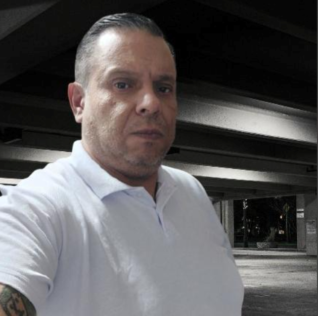

Esta página reúne os projetos, reflexões e debates construídos ao longo das disciplinas de Direito Constitucional — da Teoria do Estado à Prática Avançada.
Ementa: Estudo da Teoria Geral do Estado, da formação do Estado Moderno, da soberania, do poder constituinte e da estrutura do Estado brasileiro. Análise dos fundamentos históricos e filosóficos da Constituição de 1988.
📚 Portfólio completo da disciplina: Acesse meus trabalhos, provas (Grau A e B), resumos e reflexões — produções autorais com análise crítica de Weber, Faoro, Rui Barbosa, Marx e Gramsci.
Ementa: Estudo aprofundado dos direitos e garantias fundamentais, da organização do Estado (Poderes Executivo, Legislativo e Judiciário), do controle de constitucionalidade e das normas constitucionais programáticas. Análise da eficácia e aplicabilidade das normas constitucionais.
Ementa: Aprofundamento no devido processo legislativo, nas funções típicas e atípicas do Poder Legislativo, no processo de formação das leis e na análise de propostas legislativas sob a perspectiva da constitucionalidade material e formal. Estudo de casos concretos e de temas contemporâneos.
📌 Projeto em destaque: Criminalização da Misoginia (PL 896/2023) Análise do devido processo legislativo, controle de constitucionalidade e o debate sobre a (in)constitucionalidade da proposta — com votação apertada e reflexão sobre a polarização política.
Ementa futura: Disciplina voltada para a aplicação prática do Direito Constitucional, com simulações de ações de controle de constitucionalidade, elaboração de pareceres, atuação em tribunais e análise de casos concretos de grande repercussão.
👨🎓 Fábio Wlademir Rodrigues da Silva — 47 anos, bolsista na UNISINOS. Bacharelando em Direito, com mais de uma década de experiência em TI, NOC/SOC e infraestrutura. Pesquiso a interseção entre o Direito Constitucional, a proteção de dados e a inovação tecnológica.
📧 fabiowlademirrs@gmail.com · 📱 (51) 99888-3187